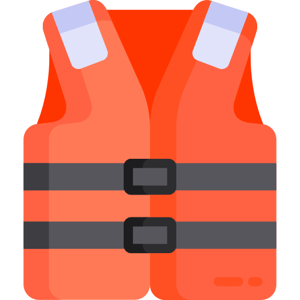

FAQ
Frequently Asked Questions

Is this a good trip for kids? What are the age ranges you allow?

Absolutely this is a good trip for children of all ages. We have found however that children over the age of
8 seem to enjoy it more overall (And parents especially enjoy it more if their children are all over 8).
A common concern we get from parents is that their children will be bored stuck on a boat for hours at a time.
Surprisingly we deal with very few bored children of any age. The areas we are rafting through are some of the
most beautiful in the world, and you never know what you might see around any corner. Not to mention the rapids
which keep things very interesting.
Each boat also comes equipped with a guide. It has been proven that river guides are unable to go for
very long at all without telling stories...some of which are even true!
Is whitewater rafting safe? I don't even know how to swim! Can I still come?

As with all adventure sports, there is an inherent and assumed element of risk. To help ensure
your safety, our guides are all certified in Wilderness First aid and all start with at least 3
years of rafting experience. The most common injuries are sunburns and injuries that occur on land.
Everyone on commercial rafting trips wears coast guard approved life vest or personal flotation
device (PFD). Many non swimmers go on rafting trips and have a great time. Your guide will give
you an in depth and engaging safety talk before your trip begins explaining what you should
prepare for and do in the event that you fall out of the raft.
What is included in the trip?

We will provide all necessary camping equipment. This includes a sleeping bag, foam pad,
waterproof duffle bag, small waterproof day bag, tent and a cot, eating utensils and camping
chair.
We provided water and lemonade during the day. Coffee, tea and hot chocolate are provided
during the morning and evening hours. You may bring beer, liquor and soft drinks (in reasonable
amounts, 2 cans per day). You may purchase these items either the night before the trip, or
on your way to the put-in. 3 meals per day, plus snacks
What do I need to bring?
For clothing, wear swim suits or quick dry underwear as a base layer. Over the base layer, you can
choose to wear polypropylene if you are too cold or cotton if you are too warm. Large brim hats provide
good protection from the sun during the day, just make sure it has a good strap. Make sure you wear
sandals or water shoes, but if you are not used to hiking in these you can bring a broken-in pair of
shoes you have hiked in before. Finally, for sleep wear some choose to sleep in their camp wear. Otherwise,
you can bring something more comfortable to sleep in.
Make sure to bring a water bottle, small day pack for hikes, moisturizing lotion, headlamp or flashlight, moleskin,
waterproof sunscreen, and lip balm. Some optional items include: gloves, a fleece jacket, a towel, a bandana, or a
small pillow. As for hygiene products: toothpaste, toothbrush, tissue, nail clippers, feminine hygiene products,
extra eyeglasses or contacts, biodegradable soap and shampoo camera equipment book, watercolors, journal and pen.
What is so great about whitewater rafting anyway?

Are you kidding me! What's not great about whitewater rafting!...Let's describe a common day on the river.
You arise in the soft light of the early morning after a night spent sleeping under a beautiful starry
sky, have a hearty warm breakfast of fresh blueberry pancakes or omelets to order, then pack your things
and prepare for the day. The day is filled with some combination of swift water, rapids, calms, hikes,
history, geology, stories, and more good food. We try to hit camp around 4pm or 5pm. After setting up your
cot you can relax with a good book or good company by the river, or explore around camp while your guides
prepare your dinner. Maybe it is something perhaps like steak and potatoes, or grilled salmon. Perhaps
even dutch oven brownies. You won't forget the dutch oven brownies! After dinner it's more relaxing,
and you might even be able to talk your guide into another story or two to send you off to bed under more
stars than you thought were possible.
How far in advance should I book my trip?

If you have specific dates you need, we recommend booking a year in advance. If you can be more flexible 6
months in advance is usually sufficient.